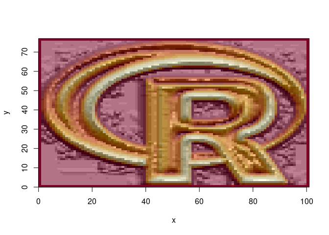
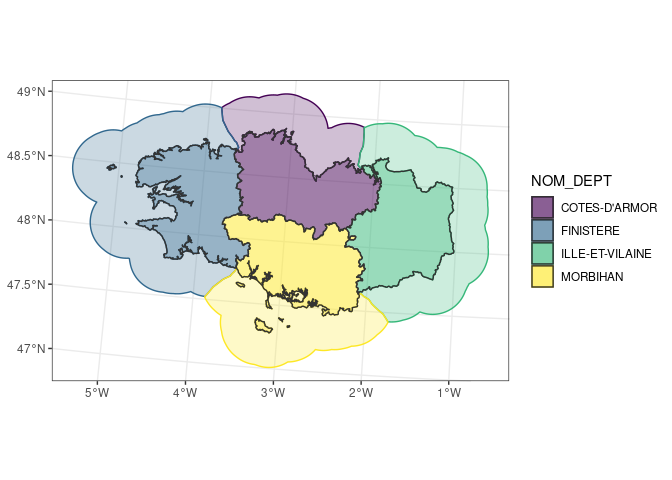

The goal of {cartomisc} is to store a few useful functions for spatial data manipulation and analysis.
Installation
You can install the dev version on Github
# install.packages("remotes") remotes::install_github("statnmap/cartomisc")
Usage
Extract part of the data with gplot_data
To draw multiple raster on the same ggplot2, or to draw raster after other objects (points, polygons, lines)
- data are extracted as a tibble
- data can then be added to a ggplot2 with
geom_tile
# Read some data slogo <- stack(system.file("external/rlogo.grd", package = "raster")) slogo #> class : RasterStack #> dimensions : 77, 101, 7777, 3 (nrow, ncol, ncell, nlayers) #> resolution : 1, 1 (x, y) #> extent : 0, 101, 0, 77 (xmin, xmax, ymin, ymax) #> crs : +proj=merc +datum=WGS84 +ellps=WGS84 +towgs84=0,0,0 #> names : red, green, blue #> min values : 0, 0, 0 #> max values : 255, 255, 255 # Get partial raster data to plot in ggplot r.gg <- gplot_data(slogo) # Remove NA to reduce size of table r.gg.nona <- r.gg %>% filter(!is.na(value)) r.gg.nona #> # A tibble: 23,331 x 4 #> x y value variable #> <dbl> <dbl> <dbl> <fct> #> 1 0.5 76.5 255 red #> 2 1.5 76.5 255 red #> 3 2.5 76.5 255 red #> 4 3.5 76.5 255 red #> 5 4.5 76.5 255 red #> 6 5.5 76.5 255 red #> 7 6.5 76.5 255 red #> 8 7.5 76.5 255 red #> 9 8.5 76.5 255 red #> 10 9.5 76.5 255 red #> # … with 23,321 more rows
Plot with ggplot2
# Plot ggplot(r.gg.nona) + geom_tile(aes(x = x, y = y, fill = value)) + scale_fill_gradient("Probability", low = 'yellow', high = 'blue') + facet_wrap(vars(variable)) + coord_equal()

Sun position
Calculate sun position for hillShade
sun_position <- sun_position(2019, 04, 26, hour = 12, min = 0, sec = 0, lat = 46.5, long = 6.5 ) sun_position #> $elevation #> [1] 56.48539 #> #> $azimuth #> [1] 192.4585
Use with hillShade
r <- raster(system.file("external/rlogo.grd", package = "raster")) # slope and aspect r_slope <- terrain(r, opt = "slope") r_aspect <- terrain(r, opt = "aspect") # hillshade r_hillshade <- hillShade(r_slope, r_aspect, angle = sun_position$elevation, direction = sun_position$azimuth) # plot image(r) image(r_hillshade, col = grey(seq(0, 1, 0.1), alpha = 0.5), add = TRUE)

Create buffer areas with attribute of the closest region
- Download some data
# Define where to save the dataset extraWD <- tempdir() # Get some data available to anyone if (!file.exists(file.path(extraWD, "departement.zip"))) { githubURL <- "https://github.com/statnmap/blog_tips/raw/master/2018-07-14-introduction-to-mapping-with-sf-and-co/data/departement.zip" download.file(githubURL, file.path(extraWD, "departement.zip")) unzip(file.path(extraWD, "departement.zip"), exdir = extraWD) }
- Reduce the dataset to a small region
departements_l93 <- read_sf(dsn = extraWD, layer = "DEPARTEMENT") # Reduce dataset bretagne_l93 <- departements_l93 %>% filter(NOM_REG == "BRETAGNE")
- Calculate the regional buffer area using
regional_seas()
bretagne_regional_2km_l93 <- regional_seas( x = bretagne_l93, group = "NOM_DEPT", dist = units::set_units(30, km), # buffer distance density = units::set_units(0.5, 1/km) # density of points (the higher, the more precise the region attribution) )
- Plot the data
ggplot() + geom_sf(data = bretagne_regional_2km_l93, aes(colour = NOM_DEPT, fill = NOM_DEPT), alpha = 0.25) + geom_sf(data = bretagne_l93, aes(fill = NOM_DEPT), colour = "grey20", alpha = 0.5) + scale_fill_viridis_d() + scale_color_viridis_d() + theme_bw()
